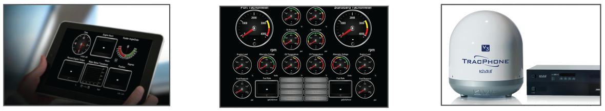
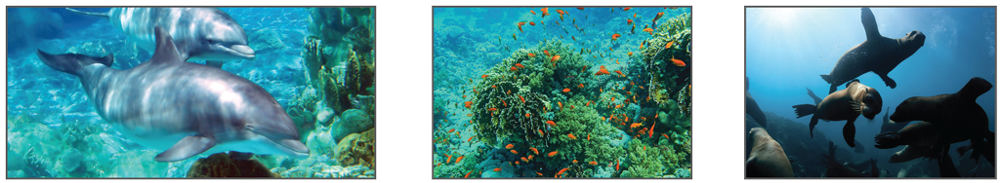
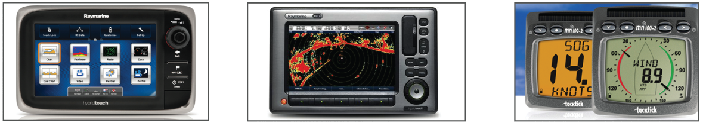

Upgrade your Nautitech 54 catamaran to make it quieter, greener and more comfortable.
We install highly-efficient carbon-neutral power generation that uses what you have around you: wind, water and sun.
This option package includes:
Upgrade your Nautitech 54 with our revolutionary always-on internet connection.
Staying connected on a boat can be a nightmare: connections are slow, unstable and expensive.
We have developed an internet connectivity solution for boats that uses 10 up to 100x less bandwidth than a standard satellite link, saving money and improving performance. Thanks to our intelligent and seamless connectivity selector, we always choose the cheapest communication method available.
This option gives you full remote control of your catamaran plus integrated weather and navigation services and, of course, an on-board wireless network.
This option packages includes the following components:

Upgrade your Nautitech 54 with our unique remote control system including automatic health checks that make your boat safer and more reliable.
Did you ever drive to the marina only to find that the boat wasn’t ready to sail? Now the Green Tech Yacht Automation function detects problems and issues before you even leave the house!
Our automation controls every component on the boat. The system pinpoints specific components to make it easier and faster to carry out repairs. Thanks to the remote access, you have enough time to order the right replacement parts or order boat services. The system can be controlled remotely or on board using notebooks or tablets.
This option packages includes the following components:

Upgrade your Nautitech 54 with our exclusive and most complete navigation and multimedia system.
We didn’t accept any compromises when we designed this system. We chose the best equipment and the most seamless integration so that our audio/video system brings you the best possible sound quality, an integrated multimedia library and LED touch displays in every room. In combination with the communication package the displays will always include always the latest weather information. We added powerful speakers and a laser show module for parties and music enthusiasts.
This option package includes the following components:
